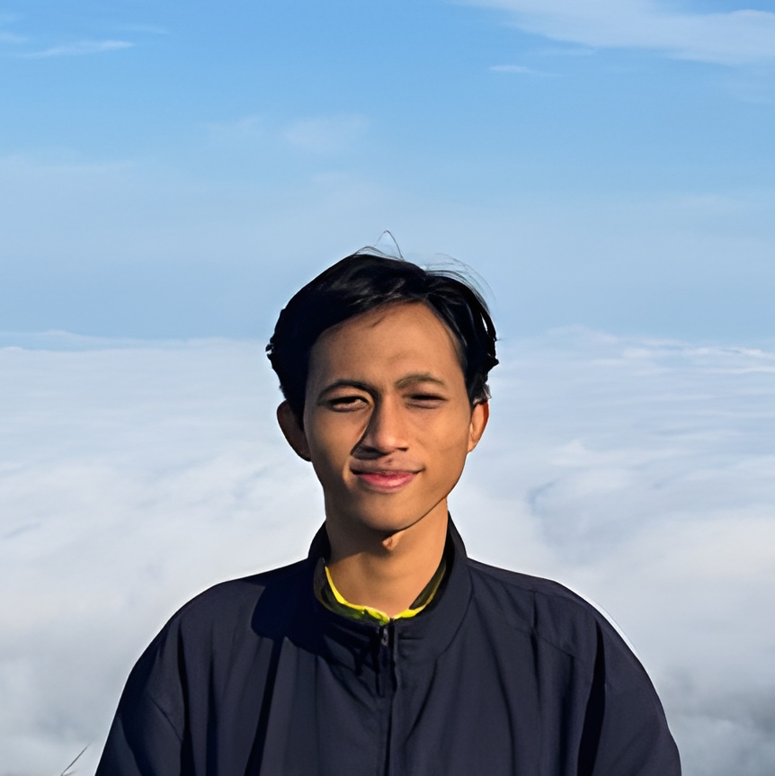

Scroll ke bawah untuk melihat lebih banyak 👇
🎁 Galeri Kenangan Kita 🎁
.jpg)
.jpeg)
.jpg)
.jpeg)
🎂 Sebuah Pesan Untukmu...
Hai Septa Kejambon,
Selamat ulang tahun, sahabatku.
Kita sudah berjalan cukup jauh — dari awal akrab di kelas 1–2 SMK, magang bareng di Bank Mandiri, kerja bersama, nongkrong di ADF, sampai momen-momen kecil yang sering bikin ketawa. Semua itu jadi bagian penting dari perjalanan kita, dan aku masih menghargainya sampai sekarang.
Aku sadar akhir-akhir ini kita agak renggang. Aku akui mungkin banyak salah datang dariku. Salah satunya ketika aku tidak mengundangmu pas aku semhas. Alasan utamanya sederhana: aku lagi belajar untuk tidak terlalu bergantung pada orang lain. Bahkan ke teman-teman kampusku sendiri pun aku sudah berusaha berhenti bergantung. Akhir-akhir ini aku malah sering ke mana-mana sendiri — nggak ambek sopo-sopo, nggak ambek arek-arek ADF, nggak ambek konco-konco kampus. Bener-bener dewean: ke kafe sendiri, nonton bioskop sendiri, keluyuran nandi-nandi gak jelas dewean. Selain itu, ada satu alasan lagi yang belum bisa kujelaskan ke siapapun: aku sedang menghadapi sebuah masalah pribadi yang belum selesai, dan untuk sekarang aku memilih tidak menceritakannya. Karena itu energiku lagi negatif dan aku takut menyalurkan beban itu ke orang lain, maka aku memilih mundur sementara. Tapi keputusan itu justru bikin jarak. Dari hati yang paling dalam, aku minta maaf sebesar-besarnya bila itu melukai atau membuatmu merasa tersisih. Aku benar-benar nggak bermaksud begitu — dan kalau masalahnya sudah kelar, aku akan cerita.
Aku juga ngerti kamu lagi banyak beban. Bukan cuma soal kehilangan ayah, tapi juga hal-hal lain di keluarga dan hidupmu yang berat banget, onk seng ngutang lah seng ngentod lah. Aku tahu itu nggak gampang, dan aku nggak perlu jelasin di sini karena kamu sendiri yang paling paham. Dunia memang sudah gila dari awal. Tapi aku ingin kamu tahu satu hal: kamu nggak sendirian. Aku tetep nganggep kamu sahabat dekat, dan aku pengen ada di lingkar hidupmu, meskipun mungkin aku belum selalu bisa hadir tepat di saat kamu butuh.
Kado ini sederhana tapi penuh makna:
- Bunga dalam kaca yang bisa menyala: Setiap kali kamu menyalakannya di ruangan gelap, semoga itu jadi pengingat: meski dunia kadang terasa gelap, selalu ada cahaya yang bertahan. Begitulah persahabatan kita — mungkin sederhana, tapi tetap ada, bahkan ketika keadaan sulit.
- Puzzle dengan fotomu: Setiap kepingnya melambangkan bagian dari dirimu — suka duka, usaha, pencapaian, dan cerita hidup. Butuh kesabaran untuk merangkainya, sama seperti memahami seseorang seutuhnya. Kalau ada satu keping hilang, gambarnya tak akan lengkap — begitu juga persahabatan kita, yang terasa utuh karena ada dirimu di dalamnya.
- Lukisan tanganku: Masio elek tapi aku ingin ada sesuatu yang benar-benar lahir dari usahaku, bukan instan. Sebagai tanda ketulusan dan penghargaan untukmu.
Harapanku, kita bisa nongkrong bareng lagi. Entah di ADF atau di mana pun. Cerita, bercanda, dan tetap saling dukung. Semoga kita bisa terus bersama dalam persahabatan ini, sampai nanti kita punya jalan masing-masing, bahkan sampai tua sekalipun.
Terima kasih juga yang sebesar-besarnya, sepenuh-penuhnya, karena kamu sudah jadi sahabat yang ikut mewarnai perjalanan hidupku. Aku bersyukur bisa punya sahabat sepertimu.
Dengan penuh cinta,
Zakaria ❤️😩💦